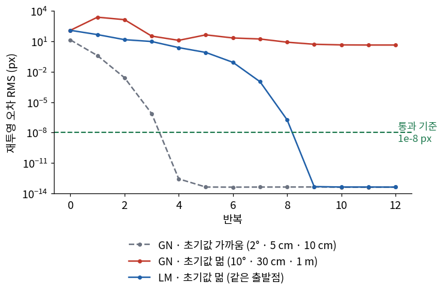
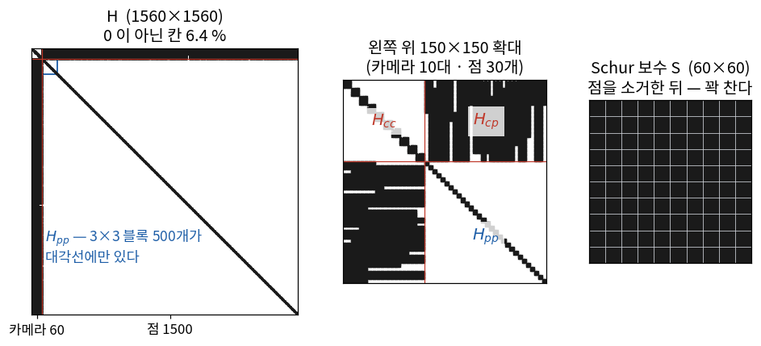
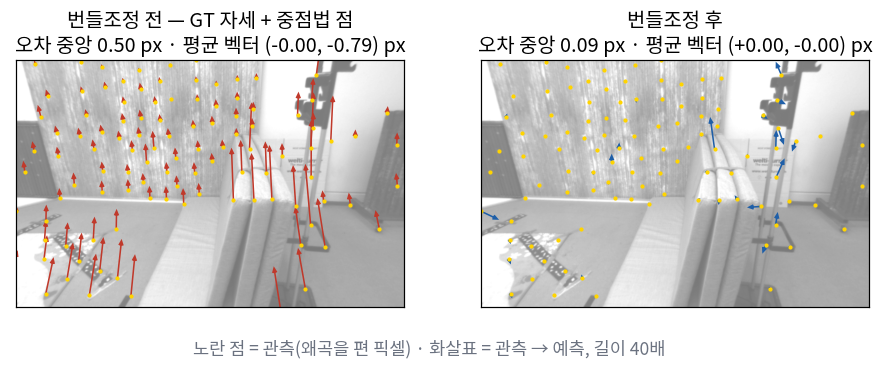

자세를 정답(GT)으로 바꿔 넣으면 재구성이 얼마나 좋아지나? 그 차이로 무엇을 가를 수 있나?
재투영 오차를 줄인다는 것은 정확히 어떤 문제를 푸는 것인가?
3회에서 회전은 더할 수 없다고 했다. 그럼 최적화의 「한 걸음」은 어떻게 내딛나?
변수가 1,560개인 문제를 왜 수십×수십짜리 계로 풀 수 있나?
재투영 오차가 0이 되어도 답이 하나로 정해지지 않는 이유는 무엇인가?
5회에서 영상 두 장으로 자세와 점을 만들었다. 그때 ⑥절 끝에 이렇게 적었다 —
중점법도 DLT도 최적해가 아니다. 두 방법 모두 「광선이 어디서 만나나」를 기하로 풀었을 뿐,
관측한 픽셀과 얼마나 맞는지를 기준으로 고른 답이 아니다.
7회에서는 그 대응점을 실제 영상에서 뽑는 프론트엔드를 만들었다.
오늘은 두 가지를 한다. 먼저 지금까지 만든 것 중 어디가 틀렸는지를
정답 데이터로 가른다(검증 사다리 4단). 그다음 자세와 점을 함께 고쳐서
관측과 가장 잘 맞는 답을 찾는다. 뒤의 것이 이 강의에서 처음 하는 최적화이고,
6회에서 본 키프레임 번들조정(PTAM)이 바로 이것이다.
한 장 요약 학기 내내 본다
절
한 줄
오늘 잰 숫자
① GT 주입 실험
한 모듈만 정답으로 바꿔 범인을 가른다. 정답도 측정이라는 것을 먼저 확인한다
합성 대응 2.1e-12 m · GT 자세 12.33 cm · 추정 자세 6.96 cm
② 재투영 오차 최소제곱
자세와 점을 모두 변수로 두고 픽셀 오차의 제곱합을 줄인다
변수 1,560개 · 잔차 8,376개
③ 가우스-뉴턴
잔차를 1차로 펴서 정규방정식 하나를 푼다. 답 근처에서는 맞는 자릿수가 배로 는다
RMS 13.7 → 0.39 → 2.5e-3 → 7.5e-7 → 2.7e-13 px
④ Levenberg-Marquardt
걸음이 비용을 늘리면 거절하고 보폭을 줄인다
출발이 멀 때 GN 첫 걸음 121 → 2,381 px, LM은 9번째에 1e-8 통과
⑤ manifold 위의 갱신
\(R \leftarrow R\,\mathrm{Exp}(\delta\boldsymbol\theta)\) — 3회의 \(\boxplus\)가 최적화의 한 걸음이 된다
투영 야코비안 수치 대조 < 1e-6
⑥ Schur 보수
점을 먼저 소거하면 카메라 변수만 남는 작은 계가 된다
1554 → 54 · 풀이 471 ms → 20.6 ms
⑦ 게이지 자유도
단안 번들조정은 닮음변환 7자유도만큼 답이 떠 있다
헤시안 고윳값 중 0이 정확히 7개
⑧ 강인 커널
큰 잔차의 영향을 선형으로 깎는다
아웃라이어 5 %: 점 오차 중앙 61.9 cm → 2.55 cm
해석: 위 표의 숫자는 두 장면에서 나왔다.
①절과 🧪 실습은 EuRoC V1_01의 실제 영상이고, ②~⑧절은 정답을 아는 합성 장면 하나다.
합성 장면은 ②절에서 한 번 세우고 끝까지 같은 것을 쓴다 — 가우스-뉴턴도, Schur 보수도, 게이지도,
강인 커널도 같은 카메라 10대와 같은 점 500개로 잰다.
① GT 주입 실험 — 사다리 4단 사람이 한다
재구성한 점군이 정답에서 벗어나 있다면 범인은 어디일까?
후보는 셋이다 — 삼각측량 코드(5회), 대응점(7회 프론트엔드),
자세(5회의 \(E\) 분해). 셋이 한 줄로 이어져 있어서 결과 점군만 봐서는 잘 갈리지 않는다.
1회에서 소개한 검증 사다리의 4단이 이 자리를 위한 것이다.
한 모듈만 정답(GT)으로 바꿔 넣고 결과가 얼마나 좋아지는지 본다.
EuRoC은 자세 GT와 방 전체를 스캔한 Leica 점군(4회)을 함께 주기 때문에 이 실험을 할 수 있다.
상황 — 키프레임 두 장
5회 ⑦절의 표에서 깊이 3 m 점을 픽셀 잡음 1 px로 삼각측량하면, 기선 20 cm에서 깊이가 약 0.10 m 흔들린다고 했다.
그래서 기선이 20 cm쯤 되는 두 장을 고른다. V1_01 전체에서 재 보면
20 cm를 만들려면 영상을 보통 10장(10~90 %: 6~22장) 기다려야 한다.
항목
값
키프레임
cam0 1220번째 장(시작에서 61.0 s)과 1228번째 장 — 0.40 s 사이
두 카메라의 기선 · 상대 회전 (GT)
19.9 cm · 1.71°
대응점
첫 장에서 150개를 뽑아 8장을 연달아 추적한 뒤 남은 131개
— 7회의 Shi-Tomasi · KLT · 순역방향 1 px · F-RANSAC 1 px 그대로, CLAHE는 끈 상태
자세 GT
state_groundtruth_estimate0의 \(T_{WB}\)에 \(T_{BC}\)를 붙인 \(T_{WC} = T_{WB}T_{BC}\) (2회)
평가 기준
만든 점마다 Leica 점군(3,199,067개, 이웃 간격 중앙값 5.0 mm)에서 가장 가까운 점까지의 거리
세 실험 — 무엇을 정답으로 바꾸나
실험
자세
대응점
이것만 나쁘면
A
GT
합성 — Leica 점을 GT 자세로 두 영상에 직접 찍은 것
삼각측량 코드(와 그 앞의 GT 읽기)가 틀렸다
B
GT
실제 추적 결과 131개
대응점이 문제다
C
\(E\) → recoverPose (5회)
실제 추적 결과 131개
자세 추정이 문제다
7회에서는 연속한 두 장 사이에서 \(F\)를 RANSAC으로 풀어 틀린 대응을 버렸다(왜곡을 편 픽셀에서).
C에서는 그렇게 남은 대응으로 두 키프레임 사이의 \(E\)를 풀고 자세를 꺼낸다(정규화 좌표에서).
같은 에피폴라 기하지만 앞의 것은 거름망이고 뒤의 것은 자세 추정이다.
C에는 한 가지를 따로 정해야 한다. 5회 ⑤절에서 본 대로 \(E\)는 이동의 크기를 모른다.
그래서 C의 이동 크기는 GT 기선 길이 19.9 cm로 맞추고, 카메라 1은 GT 자리에 둔다.
비교하려는 것이 자세 방향의 정확도이기 때문이다. 삼각측량은 셋 다 5회의 중점법이다.
결과 — 점군 세 벌
실험
점
중앙값
90 %
최대
A
131
정답 점과의 거리 최대 2.1e-12 m
B
131
12.33 cm
35.75 cm
57.4 cm
C
131
6.96 cm
18.80 cm
38.7 cm
A는 통과다. 삼각측량 코드는 맞다. 그런데 B가 C보다 나쁘다.
정답 자세를 넣은 쪽이 추정한 자세를 넣은 쪽보다 Leica에서 더 멀다. 이건 어떻게 된 일일까?
⚠️ GT 쿼터니언을 정규화하지 않으면 A가 7.3e-4 m로 실패한다
A는 무잡음이라 1e-12 근처가 나와야 한다. 그런데 EuRoC GT의 쿼터니언은
소수 여섯 자리까지만 적혀 있어서 노름이 정확히 1이 아니다 — 1000번째 줄은 1.0000001이다.
정규화하지 않고 회전행렬로 바꾸면 \(R^\top R - I\)의 성분이 2.4e-6까지 벌어지고,
그 \(R\)의 전치는 더 이상 역이 아니다. 그러면 A가 0.73 mm를 낸다.
A는 삼각측량만이 아니라 A가 지나는 모든 코드를 시험한다.
사다리 1단(\(R^\top R = I\))을 파일에서 읽은 값에도 걸어 두면 이 자리에서 바로 잡힌다.
GT 자세의 에피폴라 거리 확인
B와 C는 대응점이 같고 자세만 다르다. 그렇다면 「어느 자세가 이 대응점과 더 잘 맞나」를 직접 재 볼 수 있다.
5회 ①절의 에피폴라 선이 그 도구다. 카메라 1의 좌표를 카메라 2의 좌표로 옮기는 상대 자세를
\((R_{21}, \mathbf{t}_{21})\)라 하면(5회와 같은 방향), 그 자세가 맞을 때 영상 2의 대응점은
\(E = [\mathbf{t}_{21}]_\times R_{21}\)가 그은 선 위에 있어야 한다. 선에서 몇 픽셀 떨어졌는지 잰다.
어느 자세로 선을 그었나
중앙값
90 %
GT 자세
0.996 px
4.071 px
\(E\)로 구한 자세 (C)
0.184 px
1.043 px
대응점은 \(E\)의 자세와 0.2 px 안팎에서 맞고, GT 자세와는 1 px쯤 어긋난다.
\(E\)는 바로 이 대응점으로 구한 것이니 GT보다 유리한 것은 당연하다. 그래도 0.2 px은 KLT 추적이 내는 정밀도 수준이고,
1 px은 그보다 다섯 배 크다.
0.1°만 어긋나도 0.8 px이다. 실제로 GT와 \(E\)의 상대 회전은 0.067°(0.53 px) 다르다.
그리고 5회 ⑦절의 표대로 1 px은 기선 20 cm·깊이 3 m에서 깊이 약 10 cm다.
B의 중앙값 12 cm가 그 크기다. B를 나쁘게 만든 것은 대응점보다 정답 쪽일 가능성이 높다.
여기서 「정답 쪽」은 GT 몸체 자세 하나가 아니라 카메라 자세를 만드는 사슬 전체다 —
Vicon과 IMU로 만든 \(T_{WB}\), 그것을 카메라로 옮기는 \(T_{BC}\), 영상과 GT의 시각 정렬.
오늘 데이터만으로는 그중 어디인지까지는 가르지 못한다. 다만
0.4 s 사이의 상대 자세처럼 작은 축척에서는 그 사슬의 오차가 영상에서 1 px로 보일 수 있다는 것은 분명하다.
해석: GT 주입 실험은 보통 A → B → C 순으로 나빠지기를 기대하고, 어디서 급격히 나빠지는지로 범인을 가른다.
여기서는 A → B에서 급격히 나빠졌고 C는 B보다 나았다. 결과가 가리킨 것은 정답으로 넣은 GT 쪽이었다.
GT 주입 실험은 GT가 그 자리에서 추정보다 훨씬 정확할 때 범인을 가른다.
그래서 GT를 넣기 전에 그 GT가 지금 쓰는 축척에서 이 데이터와 맞는지 한 번 재 두면 덜 헤맨다 —
에피폴라 거리 한 줄이면 된다.
그리고 이 결과는 다음 질문으로 이어진다. 자세도 점도 조금씩 틀려 있다면, 둘을 함께 고칠 수는 없을까?
② 재투영 오차 최소제곱
4회 ④절에서 재투영 오차를 정의했다 — 점 \(\mathbf{p}_W\)를 카메라 자세 \(T_{WC}\)로 찍어 본
예측 픽셀과 실제로 관측한 픽셀의 차이다. 부호는 예측 − 관측이다.
점 \(j\)를 카메라 \(i\)에서 봤다면 잔차 하나가 생긴다.
5회까지는 자세와 점 중 하나를 고정하고 다른 하나를 구했다. 이번에는
둘 다 변수로 두고, 모든 관측의 잔차 제곱합이 가장 작아지는 값을 찾는다.
$$
\min_{\{T_{WC_i}\},\ \{\mathbf{p}_j\}}\;
F = \tfrac{1}{2}\sum_{(i,j)} \big\lVert \mathbf{r}_{ij} \big\rVert^{2}
$$
🆕 이 식의 기호 — 크기까지
\(T_{WC_i}\) — 카메라 \(i\)의 자세. 4×4이지만 자유도 6
회전 \(R_i\)(3×3, 자유도 3)와 위치 \(\mathbf{t}_i\)(3×1). 2회의 표기 그대로 「월드에서 본 카메라」다.
①절의 \((R_{21}, \mathbf{t}_{21})\)는 두 카메라 사이의 상대 자세였고, 여기의 \((R_i, \mathbf{t}_i)\)는
월드 기준 자세다.
\(\mathbf{p}_j\) — 점 \(j\)의 월드 좌표. 3×1
5회의 삼각측량 결과가 첫 값이 된다.
\(\mathbf{u}_{ij}\) — 카메라 \(i\)가 점 \(j\)를 본 픽셀. 2×1
오늘은 4회 ③절의 방식으로 왜곡을 먼저 편 픽셀을 쓴다. 그래서 \(\pi\)는 왜곡 없는 핀홀이다.
왜곡을 \(\pi\) 안에 넣는 방법은 ⑤절에서 따로 본다.
\(\tfrac{1}{2}\) — 미분했을 때 2가 떨어지게 붙인 상수
최솟값의 위치는 바꾸지 않는다. Ceres(⑤절)가 보고하는 「cost」도 이 \(\tfrac12\)이 붙은 값이다.
이 문제를 번들조정(bundle adjustment, BA)이라고 부른다.
카메라마다 점들로 뻗어 나가는 광선 다발(bundle)을 통째로 조정(adjust)해서
모든 광선이 관측 픽셀을 지나게 만든다는 뜻이다.
합성 장면 하나 — ②~⑧절이 끝까지 쓰는 것
이 절부터는 정답을 아는 장면에서 잰다(사다리 3단).
5회의 합성 데이터 생성기와 같은 방식이고, 크기는 키프레임 10개 · 점 500개다.
가로 4 m · 높이 2.4 m인 방의 벽 세 면에 점 500개. 정면 벽은 카메라에서 3.3~3.5 m 앞이다.
카메라 10대는 한 대마다 옆으로 10 cm, 앞으로 2 cm씩 옮겨 가며 정면을 본다(오른쪽 칸).
카메라 축은 OpenCV 관례(2회) — \(x\) 오른쪽 빨강 · \(y\) 아래 초록 · \(z\) 광축 파랑.
무엇
개수
어떻게 셌나
관측 \((i, j)\)
4,188
카메라 셋 이상에 보이는 점만 남겼다. 점 하나를 본 카메라 수 최소 3 · 중앙 10
잔차 \(m\)
8,376
관측 하나가 \(u\)·\(v\) 둘
변수 \(n\)
1,560
\(10 \times 6 + 500 \times 3\)
고정하는 것
6 + 1
첫 카메라 자세(6)를 고정하고, 카메라 0과 9 사이 거리(정답 0.9186 m)를
잔차 한 줄로 묶는다(1). 이것이 왜 필요한지는 ⑦절에서 본다. 그래서 실제로 움직이는 자유도는 \(1560 - 7 = 1553\)이다
초기값
정답에서 자세 2° · 5 cm, 점 10 cm쯤 흔들었다(카메라 0은 정답 그대로, 카메라 9는 카메라 0과의 거리를 유지한 채 흔들었다).
이때 재투영 오차 RMS 13.7 px
픽셀 좌표는 반올림하지 않는다(5회 의뢰서의 함정 그대로).
정답 자세와 정답 점을 넣으면 잔차가 정확히 0인 데이터다. 그래서 최적화가 맞게 짜여 있다면
초기값에서 출발해 잔차 0으로 돌아와야 한다. 그것이 이 장면의 판정 기준이다.
③ 가우스-뉴턴
\(F\)를 줄이는 방향을 어떻게 찾을까? \(\mathbf{r}\)는 투영 때문에 변수에 대해 비선형이다.
비선형 문제를 한 번에 풀 수는 없으니 지금 자리 근처에서 직선으로 펴고, 편 문제를 풀어 한 걸음 가고,
다시 펴는 것을 되풀이한다.
모든 잔차를 세로로 쌓은 벡터와 모든 변수를 쌓은 벡터를 먼저 정한다.
🆕 쌓은 벡터와 야코비안 — 이 장면의 크기로
\(\mathbf{r}\) — 모든 잔차를 쌓은 것. \(m \times 1 = 8376 \times 1\)
\(\mathbf{r}_{ij}\) 4,188개를 세로로 이어 붙였다.
\(\boldsymbol\delta\) — 모든 변수의 작은 변화량. \(n \times 1 = 1560 \times 1\)
카메라마다 6개, 점마다 3개. 회전은 「더하는 양」이 아니라 ⑤절의 방식으로 넣는 양이다.
이 식을 정규방정식이라 하고, 이것을 풀어 한 걸음씩 가는 방법이
가우스-뉴턴(Gauss-Newton, GN)이다. 이 장면에서 \(H\)는 1560×1560인데,
이대로는 풀리지 않는다 — 이유는 ⑦절에서 본다. 그래서 ②절에서 정한 대로
첫 카메라의 6열을 빼고(1554×1554), 거리 잔차 한 줄을 더해서 푼다.
🆕 이름 셋 — 사람 이름이다
Gauss — Carl Friedrich Gauss (1777–1855), 독일의 수학자
최소제곱법을 세운 사람 중 하나다. 1801년 관측이 끊긴 소행성 세레스(Ceres)의 궤도를
최소제곱으로 계산해 다시 찾아낸 일화가 유명하다. ⑤절의 최적화 라이브러리 Ceres Solver의 이름이 여기서 왔다.
Newton — Isaac Newton (1643–1727), 영국의 물리학자·수학자
함수를 2차식으로 근사해 영점이나 최솟값을 찾아가는 뉴턴법의 이름이다.
헤시안 (Hessian) \(H\) — Ludwig Otto Hesse (1811–1874), 독일의 수학자
원래 뜻은 2차 미분을 모은 행렬이다. 최소제곱에서는 \(J^\top J\)를 그 근사로 쓰고 같은 이름으로 부른다.
6회 ③절에서 본 정보행렬이 이것이다 — 잔차를 표준편차로 나눠 두었다면 \(J^\top J\)가 그대로 정보행렬이 된다.
왜 「뉴턴의 근사」인가
뉴턴법은 비용 \(F\)의 진짜 2차 미분을 쓴다. 최소제곱 비용을 두 번 미분하면 이렇게 나온다
(\(r_k\)는 \(\mathbf{r}\)의 \(k\)번째 성분, 스칼라).
가우스-뉴턴은 뒤의 합을 버린 것이다. 버려도 되는 이유가 식에 보인다 —
그 항에는 잔차 \(r_k\)가 곱해져 있다. 답 근처에서 잔차가 작으면 그 항도 작다.
무잡음 데이터라면 답에서 잔차가 정확히 0이므로, 답에 가까워질수록 GN은 뉴턴법과 같아지고
뉴턴법처럼 맞는 자릿수가 매 걸음 두 배로 는다(2차 수렴). 덤으로 2차 미분을 계산할 필요가 없다.
합성 장면에서 실제로 돌린 결과다. 초기 RMS 13.7 px에서 출발했다.
반복 비용 F 재투영 오차 RMS
0 7.8740e+05 1.371e+01 px
1 6.3137e+02 3.882e-01 px
2 2.7129e-02 2.545e-03 px
3 2.3689e-09 7.521e-07 px
4 3.1240e-22 2.731e-13 px
5 7.6424e-24 4.270e-14 px ← double 정밀도의 바닥
정답과의 차이: 회전 1.4e-14° · 위치 1.6e-15 m · 점 최대 1.6e-14 m
해석: 2 → 3 → 4번째 줄에서 RMS의 지수가 −3 → −7 → −13으로 간다. 자릿수가 두 배씩 붙는 2차 수렴이다.
다섯 번째에서 4e-14에 멈추는 것은 알고리즘이 아니라 부동소수점의 한계다.
통과 기준 1e-8 px보다 다섯 자리 넘게 아래다.
무잡음에서 이렇게 떨어지지 않으면 튜닝보다 버그일 가능성이 높다 — ⑤절 끝에서 실제로 하나 심어 본다.
④ Levenberg-Marquardt
그럼 GN만 쓰면 될까? 위 결과는 초기값이 가까웠기 때문이다.
같은 장면에서 출발점을 멀리 둬 본다 — 자세 10° · 30 cm, 점 1 m쯤 흔들어서 초기 RMS가 121 px이다.

같은 장면 · 같은 출발점(121 px)에서 GN(붉은 선)과 LM(파란 선). 회색 점선은 ③절의 가까운 출발점에서 돌린 GN이다.
녹색 파선이 통과 기준 1e-8 px.
GN은 첫 걸음에서 121 px → 2,381 px로 스무 배 나빠졌다. 열 번을 가도 4.4 px에 머문다.
1차로 편 식 \(\mathbf{r} + J\boldsymbol\delta\)는 지금 자리 근처에서만 맞는데,
GN은 그 식이 먼 곳까지 맞는다고 보고 끝까지 걸어간다.
첫 걸음 뒤를 들여다보면 관측 잔차의 중앙값은 38 px인데, 점 하나가 카메라 두 대의 뒤로 넘어가
그 관측의 잔차가 21만 px이 됐다. RMS를 2,381 px로 끌어올린 것은 대부분 그 관측들이다.
걸음을 거절하는 규칙
고치는 방법은 상식적이다. 걸음을 가 보고 비용이 늘었으면 그 걸음을 버리고 보폭을 줄여 다시 푼다.
보폭은 정규방정식의 대각에 무언가를 더해서 줄인다.
\(\lambda D\boldsymbol\delta \approx -J^\top\mathbf{r}\), 즉 \(\boldsymbol\delta \approx -\tfrac{1}{\lambda}D^{-1}\mathbf{g}\) —
변수마다 크기를 맞춘 기울기의 반대 방향으로 작게
느리지만 비용을 늘리지 않는다
\(\lambda\)는 걸음이 성공했는지를 보고 매번 조절한다. 이 자료의 구현은 가장 단순한 규칙을 썼다.
δ 를 푼다 → 가 본다
비용이 줄었다 → 받아들인다, λ ← λ / 10 (GN 쪽으로)
비용이 늘었다 → 버린다, λ ← λ × 10 (기울기 쪽으로), 같은 자리에서 다시 푼다
이 방법이 Levenberg-Marquardt(LM)다. 위 그림의 파란 선이 그것이고,
같은 121 px에서 출발해 45.7 → 14.5 → 9.5 → 2.4 → 0.80 → 0.084 px로 내려가
9번째 반복에 1e-8 px를 지났다. 끝에서 정답과의 차이는 회전 1.3e-14°다.
🆕 이름 둘 — 사람 이름이다
Levenberg — Kenneth Levenberg
1944년 논문을 낼 때 미국 육군 병기창(Frankford Arsenal)에 있었다. 비선형 최소제곱의 정규방정식에 \(\lambda I\)를 더하는 아이디어를 냈다.
Marquardt — Donald Marquardt (1929–1997), 미국의 통계학자
1963년에 같은 방법을 다시 정리하면서 \(I\) 대신 \(\operatorname{diag}(J^\top J)\)를 쓰게 했다.
변수마다 단위가 달라도(미터와 라디안) 감쇠가 고르게 걸린다. 위 식의 \(D\)가 그것이다.
신뢰 영역(trust region)으로 본 LM
LM에는 다른 읽기 방법이 하나 더 있다. ③절의 2차식(1차로 편 모델)을
반경 \(\Delta\) 안에서만 최소화하라고 하면 어떻게 될까?
제약이 걸린 최소화는 라그랑주 승수 \(\lambda \ge 0\)을 붙여 푼다.
\(\tfrac12\lVert\mathbf{r} + J\boldsymbol\delta\rVert^2 + \tfrac{\lambda}{2}(\boldsymbol\delta^\top D\boldsymbol\delta - \Delta^2)\)를
\(\boldsymbol\delta\)로 미분해 0으로 놓으면 다음과 같다.
LM의 식이 그대로 나온다. 즉 \(\lambda\)를 키운다는 것은 「1차 모델을 믿을 수 있는 반경」을 줄이는 것이다.
이 관점의 이름이 신뢰 영역이고, Ceres의 옵션 이름도
trust_region_strategy_type = LEVENBERG_MARQUARDT다.
해석: 가까운 출발점(③절)에서는 GN이 조금 빠르다 — 같은 장면에서 GN은 4번째 반복에
RMS 2.7e-13, LM은 6번째 반복에 2.95e-13에 닿았다.
LM은 \(\lambda\)가 작아질 때까지 조금 덜 가기 때문이다.
출발점이 멀 수 있는 실제 문제에서는 LM이 기본값이고, 답 근처에서는 \(\lambda\)가 작아져 GN과 같아진다.
둘 중 하나를 고르는 것이 아니라 LM 안에 GN이 들어 있다고 보면 된다.
⑤ manifold 위의 갱신과 투영 야코비안 사람이 한다
③절에서 「\(\boldsymbol\delta\)만큼 움직인다」고 했다. 점은 \(\mathbf{p} + \delta\mathbf{p}\)로 더하면 된다.
그런데 회전은 더할 수 없다(3회 ⑦절) — \(R + \delta R\)은 회전행렬이 아니다.
3회에서 이 문제를 위해 만든 것이 \(\boxplus\)였다. 오늘 그것이 최적화의 한 걸음이 된다.
한 걸음의 정의 — right perturbation
3회 ⑧절에서 right perturbation으로 통일하기로 했다. 오늘 그것을 자세 전체로 넓혀 규약 문서에 다음 세 줄을 추가한다.
카메라 하나의 변화량은 6개이고, 순서는 \((\delta\mathbf{t}, \delta\boldsymbol\theta)\)로 둔다 —
Sophus가 SE(3)의 tangent 벡터를 (이동, 회전) 순서로 두는 관례를 따랐다.
\(\mathbf{t}\)에 \(R\)이 곱해진 것은 \(\delta\mathbf{t}\)도 회전과 마찬가지로 카메라 좌표계에서 본 이동이라는 뜻이다.
이렇게 정의된 덧셈 위에서 하는 최적화를 manifold 위의 최적화라고 부른다.
(Sophus에도 SE(3)용 Ceres Manifold가 들어 있지만, 그쪽은 이동 갱신에 회전량이 섞여 들어가서
위 식과 1차까지만 같다. 이 강의는 위 세 줄을 그대로 코드로 옮긴다 — 아래 RightPoseManifold.)
투영 야코비안 — 세 조각으로 나눠 잇는다
③절의 \(J\)는 「이 자세나 점을 조금 움직이면 픽셀이 얼마나 움직이나」다. 통째로 미분하지 않고,
계산이 지나가는 길을 세 칸으로 끊는다 — 자세·점 → 카메라 좌표 \(\mathbf{p}_C\) → 픽셀 \(\mathbf{u}\).
첫째 조각 — 픽셀을 카메라 좌표로 미분한다. \(\mathbf{p}_C = (X, Y, Z)\)이고 \(u = f_u X/Z + c_u\), \(v = f_v Y/Z + c_v\)이다.
\(Z\)가 분모에 있다. 깊이 3 m 점이라면
\(f_u/Z = 458.654 / 3 = 152.9\) px/m — 점이 옆으로 1 cm 움직이면 픽셀은 1.5 px 움직인다.
6 m 밖이면 그 절반이다. 먼 점일수록 픽셀이 덜 움직이고, 거꾸로 픽셀로는 먼 점의 위치를 잘 모른다 —
5회 ⑦절의 깊이 불확실도 표와 같은 이야기다.
셋째 줄은 \(\mathrm{Exp}(\mathbf{a}) \approx I + [\mathbf{a}]_\times\)(3회), 넷째 줄은 작은 양끼리의 곱을 버린 것이다.
마지막으로 외적의 순서를 바꾼다 — \(-[\mathbf{a}]_\times\mathbf{b} = -\mathbf{a}\times\mathbf{b} = \mathbf{b}\times\mathbf{a} = [\mathbf{b}]_\times\mathbf{a}\)이다.
손으로 유도해 놓고 그대로 믿지 않는다. 3회 ⑨절의 수치 야코비안 대조를 조각마다 건다(사다리 2단).
흔드는 방식은 위 갱신 그대로다.
∂p_C/∂δθ = [p_C]× 상대오차 4.933e-08 ← 통과 기준 1e-6
∂p_C/∂δt = −I 상대오차 2.640e-09
∂u/∂p_C (왜곡 제외) 상대오차 2.033e-07
해석: 조각으로 나누는 이유는 조각마다 따로 대조할 수 있어서다.
잔차가 이상할 때 세 조각을 하나씩 확인하면 어느 칸이 틀렸는지 바로 갈린다.
왜곡 모델의 야코비안
오늘은 관측을 미리 펴서 왜곡을 피했다. 왜곡 모델(4회)을 \(\pi\) 안에 넣으면
\(\partial\mathbf{u}/\partial\mathbf{p}_C\) 자리에 왜곡 함수의 야코비안(2×2)이 한 겹 더 곱해진다. 구조는 그대로다.
여기서 함정이 하나 있다. 왜곡 야코비안을 빠뜨린 첫째 조각을, 왜곡이 든 실제 투영의 유한차분과 대조해 본다.
대조한 점 — 왜곡 전 정규화 좌표, 깊이 3 m
픽셀
상대오차
기준 1e-6
주점 바로 위 \((x, y) = (0, 0)\)
(367.2, 248.4)
5.2e-10
통과해 버린다
\((0.01,\ 0.01)\)
(371.8, 252.9)
1.2e-4
실패
\((0.30,\ 0.20)\)
(499.9, 336.6)
8.6e-2
실패
오른쪽 위 모서리 근처
(667.4, 54.7)
6.4e-1
실패
해석: 주점에서는 왜곡 함수의 야코비안이 단위행렬 \(I\)다 — 왜곡이 보태는 항(계수 \(k_1\)·\(k_2\)·\(p_1\)·\(p_2\)가 붙은 항)의
미분이 거기서 모두 0이기 때문이다. 그래서 왜곡 야코비안을 통째로 빠뜨려도 주점 위의 점으로는 대조를 통과한다.
\((0.01, 0.01)\)에서도 상대오차가 1e-4라 기준을 1e-3으로 느슨하게 잡으면 통과한다.
대조는 모서리 근처 점으로도 한 번 해 두면 안전하다. 4회 의뢰서의 「네 모서리」와 같은 이유다.
야코비안을 얻는 세 방법
🆕 자동미분 (automatic differentiation)
숫자 대신 「값 + 미분값」 쌍을 흘려보내는 계산
덧셈·곱셈·나눗셈마다 미분 규칙을 같이 적용해서, 잔차 함수를 한 번 계산하면 야코비안이 같이 나온다.
유한차분처럼 \(\varepsilon\)을 고르지 않으므로 기계 정밀도까지 정확하다.
Ceres에서는 잔차 함수를 template <typename T>로 쓰면 된다 —
T 자리에 그 쌍(Ceres의 Jet)이 들어간다.
방법
속도
틀릴 위험
언제
자동미분 (AutoDiffCostFunction)
보통
거의 없다
기본값. 먼저 이것으로 맞춘다
해석 야코비안 (위의 세 조각)
빠르다
높다 — 부호 하나에 무너진다
자동미분으로 맞춘 뒤 속도가 필요할 때
수치 미분
느리다
중간 — \(\varepsilon\) 선택에 따라
대조용으로만
순서는 자동미분으로 먼저 맞추고 → 해석 야코비안을 써서 → 셋이 일치하는지 본다.
Ceres 재투영 팩터와 Manifold
🆕 Ceres Solver — 구글이 2012년 공개한 C++ 비선형 최소제곱 라이브러리
잔차 함수와 변수 블록만 주면 나머지를 해 준다
이름은 ③절의 소행성 세레스에서 왔다. LM(④절) · Schur 보수(⑥절) · 강인 커널(⑧절)이 다 들어 있다.
이 강의는 2.2.0을 쓴다.
재투영 팩터는 짧고 개념이 코드 모양 안에 있으므로 그대로 싣는다. 잔차 계산 세 줄이 ②절의 식 그대로다.
자세 블록은 Sophus의 SE3d가 메모리에 담는 순서(쿼터니언 x, y, z, w + 위치 3) 그대로 숫자 7개다.
struct ReprojectionFactor {
template <typename T>
bool operator()(const T* T_WC_raw, const T* p_W_raw, T* residual) const {
Eigen::Map<const Sophus::SE3<T>> T_WC(T_WC_raw); // q(x,y,z,w) + t, 숫자 7개
Eigen::Map<const Eigen::Matrix<T, 3, 1>> p_W(p_W_raw);
const Eigen::Matrix<T, 3, 1> p_C = T_WC.inverse() * p_W; // p_C = Rᵀ(p_W − t)
residual[0] = K_[0] * p_C.x() / p_C.z() + K_[2] - uv_obs_.x(); // 예측 − 관측
residual[1] = K_[1] * p_C.y() / p_C.z() + K_[3] - uv_obs_.y();
return true;
}
Eigen::Vector2d uv_obs_; // 왜곡을 편 관측 픽셀
Eigen::Vector4d K_; // fu, fv, cu, cv
};
// 붙이는 쪽: new ceres::AutoDiffCostFunction<ReprojectionFactor, 2, 7, 3>(...)
// 잔차 2개 · 자세 블록 숫자 7개 · 점 블록 숫자 3개
자세 블록은 숫자가 7개인데 자유도는 6이다. 이 차이를 Ceres에 알려 주는 것이 ceres::Manifold이고,
핵심은 Plus 한 함수 — 위의 갱신 세 줄 중 자세 두 줄이다.
이것도 자동미분으로 짤 수 있다(ceres::AutoDiffManifold).
struct RightPosePlus {
template <typename T>
bool Plus(const T* x, const T* delta, T* x_plus_delta) const {
Eigen::Map<const Sophus::SE3<T>> X(x);
Eigen::Map<const Eigen::Matrix<T, 3, 1>> dt(delta), dth(delta + 3); // (δt, δθ)
Eigen::Map<Sophus::SE3<T>> Y(x_plus_delta);
Y.translation() = X.translation() + X.so3() * dt; // t ← t + R·δt
Y.so3() = X.so3() * Sophus::SO3<T>::exp(dth); // R ← R·Exp(δθ)
return true;
}
// Minus 는 Plus 의 역: δt = Rᵀ(t_y − t_x), δθ = Log(R_xᵀ R_y)
};
using RightPoseManifold = ceres::AutoDiffManifold<RightPosePlus, 7, 6>;
// 쓰는 쪽: problem.AddParameterBlock(T_WC.data(), 7, new RightPoseManifold);
🆕 이 코드에서 처음 나오는 것
ceres::AutoDiffManifold<Plus, 7, 6> — 저장하는 숫자 7개, 움직이는 방향 6개
3회의 말로 하면 「manifold가 놓인 공간의 차원」과 「tangent space의 차원」이다.
Plus와 Minus를 템플릿으로 주면 Ceres가 나머지
(PlusJacobian 등)를 자동미분으로 만든다.
PlusJacobian — 7×6 행렬
Ceres는 팩터의 야코비안을 저장하는 숫자(7개)에 대해 받는다. 거기에 이 7×6을 곱해
tangent 방향(6개)의 야코비안으로 바꾼다. 아래 대조가 그 곱의 결과를 비교한 것이다.
Sophus::SO3<T>::exp — 3회의 \(\mathrm{Exp}\)
축-각 벡터 하나(3개)를 받아 회전을 만든다. 템플릿이라 Jet을 그대로 흘려보낼 수 있다.
Ceres 2.2.0으로 위 두 조각을 빌드해 합성 장면에서 맞춰 본 결과다.
RightPoseManifold 이동 부분과 t + R·δt 의 차이 0.0e+00 · Minus(Plus(x, δ), x) 와 δ 의 차이 1.5e-16
영상 가운데 점 (366.7, 244.2) 자동미분 vs 해석식 1.935e-16 자동미분 vs 유한차분 7.591e-09
영상 모서리 점 (750.7, 16.0) 자동미분 vs 해석식 3.607e-16 자동미분 vs 유한차분 7.357e-07
⚠️ 함정 둘 — 인터넷 예제와 Ceres 기본 쿼터니언
① LocalParameterization은 Ceres 2.2에 없다.
인터넷의 Ceres 예제 대부분이 그 클래스를 쓴다. 2.2에서 제거되고 Manifold로 바뀌었다.
옛 예제를 그대로 가져오면 빌드가 깨진다. 위험하진 않지만 시간을 버린다.
② Ceres가 기본으로 주는 쿼터니언 Manifold는 left perturbation이다.
2.2.0의 ceres::EigenQuaternionManifold로 실제로 한 걸음 가 보면 이렇게 나온다.
Plus(q, δ) 와 Exp(δ)⊗q 의 차이 3.1e-17 ← 왼쪽 곱이다
Plus(q, δ) 와 q⊗Exp(δ) 의 차이 1.2e-02
게다가 그 \(\delta\)는 반각이다 — Plus가 \([\cos\lVert\delta\rVert,\ \sin\lVert\delta\rVert\,\delta/\lVert\delta\rVert] \otimes q\)라
실제로는 \(2\lVert\delta\rVert\)만큼 돈다. 자동미분으로 답만 구할 때는 어느 쪽이든 같은 답에 닿는다.
그러나 해석 야코비안을 직접 쓰거나 공분산을 꺼내 읽는 순간 규약 문서의 right perturbation과 어긋난다.
그래서 이 강의는 위의 RightPoseManifold를 쓴다.
야코비안 부호 오류의 증상
③절의 해석에서 「무잡음에서 떨어지지 않으면 버그일 가능성이 높다」고 했다. 실제로 하나 심어 본다.
둘째 조각을 유도할 때 \(\big(R\,\mathrm{Exp}(\delta\boldsymbol\theta)\big)^\top\)을 전치하면서 \(\mathrm{Exp}(-\delta\boldsymbol\theta)\)의
마이너스를 빠뜨리면 \([\mathbf{p}_C]_\times\) 자리에 \(-[\mathbf{p}_C]_\times\)가 들어간다.
부호가 정확히 뒤집힌 판이다. ③절과 같은 장면, 같은 가까운 출발점에서 돌렸다.
GN은 발산하고, LM은 10.88 px에서 더 내려가지 않는다. LM 쪽이 더 알아채기 어렵다 — 에러도 발산도 없이
비용 변화가 멈춰서 「수렴했다」로 끝나기 때문이다. 같은 판에 수치 야코비안 대조를 걸면 범인이 바로 나온다.
∂r/∂δt 상대오차 1.348e-07 통과
∂r/∂δθ 상대오차 2.000e+00 ← 부호가 정확히 반대면 ‖J_a − J_n‖ = 2‖J_n‖ 이라 2 가 나온다
∂r/∂δp 상대오차 1.755e-07 통과
left perturbation과 섞였을 때(3회 ⑧절)는 모양이 다르다. 갱신을 \(R \leftarrow \mathrm{Exp}(\delta\boldsymbol\varphi)R\)로 하면
같은 유도에서 \([\mathbf{p}_C]_\times R^\top\)이 나온다. 부호만이 아니라 \(R^\top\)이 하나 더 붙은 꼴이고,
역시 수치 대조에서 \(\delta\boldsymbol\theta\) 블록만 걸린다.
⑥ 희소성과 Schur 보수 맡긴다
③절의 정규방정식은 1554×1554였다. 키프레임이 늘고 점이 수천 개가 되면 수만×수만이 된다.
이런 계를 매 반복 그대로 풀어야 할까? 그럴 필요가 없다. 이 행렬에는 구조가 있다.
③절에서 \(J\)의 한 줄에 0 아닌 칸이 9개뿐이라고 했다. 잔차 \(\mathbf{r}_{ij}\)는 카메라 \(i\)와 점 \(j\)만 안다.
그래서 \(H = J^\top J\)에서 두 점이 같은 칸을 공유하는 일이 없다 — 점끼리는 서로를 모른다.
변수를 카메라(c)와 점(p)으로 나눠 블록으로 쓰면 이렇다.
카메라마다 6×6 블록. 순수 번들조정에서는 카메라끼리 직접 잇는 잔차가 없어 블록대각이다
(거리 잔차 한 줄만 예외 — 고정된 카메라 0과 카메라 9를 잇는다)
\(H_{cp}\)
60×1500 · 54×1500
카메라 \(i\)가 점 \(j\)를 봤으면 그 6×3 칸이 찬다
\(H_{pp}\)
1500×1500
3×3 블록 500개가 대각선에만 있다

구조를 보이려고 고정하기 전의 \(H\)(1560×1560, 0 아닌 칸 6.4 %)를 그렸다. 가운데는 왼쪽 위 확대,
오른쪽은 점을 소거한 뒤의 Schur 보수 \(S\)(60×60). \(S\)가 꽉 찬 것은 이 장면의 점 대부분이 카메라 10대 모두에 보이기 때문이다.
첫 카메라를 뺀 실제 계(1554×1554)에서는 0 아닌 칸이 5.8 %다.
\(S\)를 \(H_{pp}\)에 대한 Schur 보수(Schur complement)라고 한다.
작은 \(S\)를 풀어 \(\boldsymbol\delta_c\)를 얻고, (3)에 넣어 \(\boldsymbol\delta_p\)를 점마다 따로 구한다.
이 꼴은 처음 보는 것이 아니다. 6회 ③절에서 지나간 위치를 지우는 계산을 \(A - BC^{-1}B^\top\)로 적고
「9회에 Schur 보수라는 이름으로 다시 나온다」고 했다. 블록 이름을 맞추면
\(A = H_{cc}\)(남기는 쪽), \(B = H_{cp}\), \(C = H_{pp}\)(지우는 쪽)이다.
6회에서 본 fill-in — 지운 변수가 잇던 변수들 사이에 새 연결이 생기는 것 — 도 그대로 보인다.
위 그림에서 블록대각이던 \(H_{cc}\)가 \(S\)에서는 꽉 찼다. 같은 점을 본 카메라끼리 이어진 것이다.
🆕 Schur — 사람 이름이다
Issai Schur (1875–1941), 독일에서 활동한 수학자
블록 행렬의 행렬식에 관한 그의 1917년 보조정리에서 이 형태가 나왔고,
「Schur 보수」라는 이름은 1968년 Emilie Haynsworth가 붙였다.
「보수(complement)」는 \(H_{pp}\) 블록을 지우고 남은 쪽이라는 뜻이다.
합성 장면에서 같은 정규방정식(②절에서 정한 대로 첫 카메라를 뺀 1554×1554)을 두 방법으로 풀어 시간을 쟀다.
H 크기 1554×1554 = 2,414,916칸 중 0 이 아닌 칸 140,960 (5.8 %)
통째로(조밀) 풀기 471.00 ms
Schur 로 풀기 20.57 ms 줄어든 계 54×54 두 답의 차이 1.0e-12
해석: 같은 답(차이 1e-12)을 23배 빨리 얻었다.
크기로 말하면 1554 → 54로 한 변이 약 29배 줄었다(고정 전 크기로는 1560 → 60, 26배. 칸 수로는 676배).
이 비율은 점이 많을수록 커진다 — 카메라 10대에 점이 1000개면 한 변 51배, 2000개면 101배다.
점은 보통 카메라보다 훨씬 많으므로 번들조정은 대개 이 방식으로 푼다.
Ceres에서는 linear_solver_type = SPARSE_SCHUR 한 줄이다 🟢.
이 구조를 알아 두면 13회가 쉬워진다. 13회에서는 점 대신 오래된 키프레임을 같은 계산으로 지운다.
지운 변수의 정보는 \(S\)의 꼴로 남은 변수들에 얹혀 계속 쓰인다.
⑦ 게이지 자유도 사람이 한다
③절에서 잔차가 4e-14까지 떨어졌다. 재투영 오차가 0이면 답은 하나로 정해진 것일까?
직관으로는 그래 보인다. 그런데 2회 ②절의 말을 떠올려 보면 — 절대 기준 좌표계는 없다.
모든 자세와 모든 점에 같은 닮음변환을 걸어 본다. 회전 \(Q\)(3×3), 이동 \(\mathbf{b}\)(3×1), 배율 \(s\)(스칼라, \(s > 0\))다.
카메라 좌표가 통째로 \(s\)배가 됐을 뿐이다. 픽셀은 \(X/Z\), \(Y/Z\)로 정해지므로 \(s\)가 약분된다 —
재투영 오차는 하나도 변하지 않는다.
지도 전체를 옮기고(3), 돌리고(3), 키워도(1) 비용이 같다. 합해서 7자유도가 정해지지 않은 채 떠 있다.
이것을 게이지 자유도(gauge freedom)라고 한다. 배율 1이 5회 ⑤절의 스케일 모호성이다.
헤시안의 영 고윳값
비용이 변하지 않는 방향이 있다는 것은 \(J\boldsymbol\delta = \mathbf{0}\)인 \(\boldsymbol\delta\)가 있다는 뜻이고,
그러면 \(H = J^\top J\)의 고윳값 중 그 개수만큼이 0이다. 합성 장면의 정답 자리에서 \(H\)의 고윳값을 가장 큰 값으로 나눠 작은 쪽부터 봤다.
아무것도 안 묶음 크기 1560 1e-12 밑 7개 −8e-18 −2e-18 −3e-19 −9e-20 8e-19 6e-18 5e-17 │ 5e-07 5e-07
첫 카메라만 묶음 크기 1554 1e-12 밑 1개 7e-19 │ 4e-07 5e-07 5e-07 …
첫 카메라 + 거리 하나 크기 1554 1e-12 밑 0개 3e-08 4e-07 5e-07 …
해석: 0이 정확히 7개이고, 그다음 고윳값(5e-07)과 열 자리 넘게 떨어져 있다.
첫 카메라를 고정하면 이동 3과 회전 3이 사라져 하나(배율)가 남고, 거리 하나를 묶으면 0이 된다.
0인 고윳값이 남아 있으면 정규방정식이 특이해서 풀이기가 엉뚱한 값을 내거나 실패한다.
③절에서 「1560×1560 그대로는 풀리지 않는다」고 한 것이 이것이다.
게이지 고정
무엇을
어떻게 (이 자료가 쓴 것)
Ceres에서
이동 3 + 회전 3
첫 카메라 자세를 고정한다
SetParameterBlockConstant(T_WC0)
배율 1
카메라 0과 카메라 9 사이 거리를 잔차 한 줄로 묶는다 — \(\kappa\,(\lVert\mathbf{t}_9 - \mathbf{t}_0\rVert - d)\)
자동미분 팩터 하나 (의뢰서에 넣는다)
합성 장면에서 \(d\)는 정답 거리 0.9186 m, 무게 \(\kappa\)는 1000 px/m다.
실제 데이터에서는 \(d\)를 영상만으로 알 방법이 없으니 보통 1로 둔다 — 그러면 지도 전체가 「그 거리 = 1」인 단위로 나온다.
이 7자유도 중 몇 개는 12회에 IMU가 들어오면서 사라지고, 그때 남는 것이 14회 자세그래프가 다루는 자유도가 된다.
⑧ 강인 커널 — Huber 맡기되 검사한다
7회에서 아웃라이어를 순역방향 검사와 RANSAC으로 걸렀다. 그래도 몇 개는 지나갈 수 있다.
걸러 낸 것도 연속한 두 장 사이에서 확인한 것이고, 여러 장에 걸쳐 추적하는 동안 조금씩 미끄러지는 점도 있다.
그런 관측이 몇 개 섞이면 번들조정은 어떻게 될까?
상황 — 같은 장면에 잡음과 아웃라이어
먼저 모든 관측에 축마다 표준편차 \(\sigma = 1\) px의 잡음을 넣는다(사다리 5단). 그다음 관측 4,188개 중
5 %인 209개를 20~60 px 떨어진 엉뚱한 자리로 옮긴다.
아웃라이어가 없는 잡음 1 px 판부터 보면, 최적화 뒤 재투영 오차 RMS는 0.9122 px다.
정답 자리에 그대로 두었을 때(1.0058 px)보다 작다 — ②절에서 센 자유도 1553개가 잡음 일부를 흡수하기 때문이다.
선형 최소제곱에서 그 크기는 \(\sigma\sqrt{(m-n)/m}\)로 예상한다(\(n\) = 움직이는 자유도 1553).
답 근처에서 잔차를 선형으로 보면 \(\mathbf{r} = J\boldsymbol\delta + \boldsymbol\varepsilon\)이다
(\(\boldsymbol\varepsilon\)은 \(m\)개 성분이 각각 표준편차 \(\sigma\)인 잡음).
최소제곱 해에서 남는 잔차는 \(\boldsymbol\varepsilon\)을 \(J\)의 열들이 만드는 공간에 수직인 쪽으로 투영한 것이다.
괄호 안은 \(m - n\)차원으로 투영하는 행렬이고, 투영행렬의 대각합은 그 차원과 같다.
그래서 \(\mathbb{E}\lVert\hat{\mathbf{r}}\rVert^2 = \sigma^2(m - n)\)이고, \(m\)개로 나눠 제곱근을 씌우면
RMS의 기댓값이 \(\sigma\sqrt{(m-n)/m}\)이 된다.
잰 값 0.9122와 1 % 안에서 맞는다. 잡음을 넣었는데 RMS가 \(\sigma\)보다 훨씬 작거나 훨씬 크면 잡음 모델이나
가중치를 의심해 볼 자리다.
제곱 오차와 아웃라이어
최소제곱은 잔차를 제곱해서 더한다. 1 px 잔차는 비용 0.5, 40 px 잔차는 800이다.
아웃라이어 하나가 정상 관측 1,600개만큼 목소리를 낸다. 그래서 큰 잔차의 목소리를 줄이는 함수 \(\rho\)를 씌운다.
관측 하나의 잔차 크기를 \(e = \lVert\mathbf{r}_{ij}\rVert\)(스칼라, 픽셀), 문턱을 \(\tau\)(스칼라, 픽셀)라 하면 Huber 함수는 이렇다.
(문턱을 흔히 \(\delta\)로 쓰지만, 이 자료에서 \(\boldsymbol\delta\)는 갱신량이라 \(\tau\)로 쓴다.)
$$
\rho(e) =
\begin{cases}
\tfrac12 e^2 & e \le \tau \\[1mm]
\tau\,e - \tfrac12\tau^2 & e > \tau
\end{cases}
$$
문턱 \(\tau\) 안에서는 최소제곱 그대로이고, 밖에서는 제곱 대신 선형으로 자란다.
두 식은 \(e = \tau\)에서 값과 기울기가 모두 이어진다.
무게로 바꿔 풀기 — IRLS
이 비용을 어떻게 GN·LM에 넣을까? \(\rho\)를 \(\mathbf{r}\)로 미분하면 답이 보인다.
\(\partial e/\partial\mathbf{r} = \mathbf{r}/e\)이므로 바깥 구간의 기울기는 다음과 같다.
즉 Huber 비용의 기울기는 「잔차에 무게 \(w\)를 곱한 최소제곱」의 기울기와 같다.
그래서 매 반복 지금 잔차로 \(w\)를 계산하고, 정규방정식을 \(J^\top W J\,\boldsymbol\delta = -J^\top W\mathbf{r}\)로 바꿔 푼다
(\(W\)는 관측마다 \(w\)를 놓은 대각행렬). 이 방식을 IRLS(반복 재가중 최소제곱)라고 한다.
40 px 잔차는 \(\tau = 2\) px일 때 무게가 \(2/40 = 0.05\)가 된다.
문턱을 정하는 근거 — 잔차 크기의 분포
\(\tau\)는 「정상 관측의 잔차가 대개 어디까지 오나」로 정한다. 잡음이 축마다 독립이고 표준편차 \(\sigma\)인 정규분포라면
잔차 크기 \(e = \sqrt{r_u^2 + r_v^2}\)의 분포는 한 줄로 유도된다.
\(e^2/\sigma^2\)은 자유도 2인 카이제곱이고, 자유도 2인 카이제곱은 지수분포라서 누적확률이 닫힌 꼴로 나온다.
$$
P(e \le a) = 1 - \exp\!\Big(-\frac{a^2}{2\sigma^2}\Big)
$$
이 분포를 Rayleigh 분포라고 한다. 숫자를 넣으면 —
\(a = 2\sigma\)에서 \(1 - \exp(-2) = 0.86\), 99 %가 되는 \(a\)는 \(\sigma\sqrt{-2\ln 0.01} = 3.03\,\sigma\)다.
그래서 \(\sigma = 1\) px인 이 장면에서 \(\tau = 2\) px로 두면 정상 관측의 86 %는 최소제곱 그대로 두고 그 밖만 깎는다.
🆕 이름 셋 — 사람 이름이다
Huber — Peter J. Huber (1934년생), 스위스의 통계학자
1964년 논문에서 이 함수를 냈다. 아웃라이어에 덜 흔들리는 추정(강인 통계)의 출발점이다.
Rayleigh — Lord Rayleigh (John William Strutt, 1842–1919), 영국의 물리학자
2차원 잡음 벡터의 크기가 따르는 위 분포에 이름이 붙었다.
Cauchy — Augustin-Louis Cauchy (1789–1857), 프랑스의 수학자
큰 잔차를 Huber보다 더 세게 깎는 Cauchy 커널이 있고, Ceres에는 HuberLoss와
CauchyLoss가 둘 다 있다.
결과 — 같은 장면, 같은 출발점
방법
회전 최대
위치 최대
점 오차 중앙
점 90 %
점 최대
(아웃라이어 없음 — 기준)
0.094°
0.59 cm
2.54 cm
6.56 cm
18.1 cm
최소제곱 그대로
2.732°
20.3 cm
61.9 cm
96.7 cm
476 cm
Huber \(\tau = 2\) px
0.118°
0.73 cm
2.55 cm
8.03 cm
76.8 cm
Huber 뒤 걸러 내고 다시 최소제곱
0.138°
0.87 cm
2.61 cm
7.69 cm
59.6 cm
최소제곱 그대로는 아웃라이어 5 %에 지도 전체가 끌려갔다 — 점 오차 중앙값이 2.5 cm에서 62 cm가 됐다.
Huber를 켜면 중앙값이 아웃라이어가 없던 판과 거의 같아진다.
다만 최댓값(76.8 cm)은 기준판(18.1 cm)보다 크다. 무게가 0.05라도 0은 아니어서, 관측이 적은 점은 아웃라이어에 조금씩 끌려 있다.
마지막 줄은 Huber로 수렴한 뒤 잔차가 3.03 px(위의 99 % 점)을 넘는 관측을 버리고 최소제곱으로 다시 푼 것이다.
Huber 뒤 잔차 3.03 px 넘는 관측 248개 — 진짜 아웃라이어 208개 + 정상 관측 40개, 놓친 아웃라이어 1개
걸러 낸 뒤 다시 최소제곱 RMS 0.882 px (관측이 하나만 남아 위치가 정해지지 않는 점 1개는 뺐다)
해석: 이 장면에서는 Huber가 아웃라이어의 영향을 대부분 막았다.
걸러 내기는 수렴한 자리의 잔차로 아웃라이어를 정확히 찾아 줬지만(209개 중 208개), 문턱이 정상 관측 40개도 함께 잘랐고,
다시 푼 결과는 점 최댓값이 조금 나아진 것 말고는 Huber만 켠 판과 비슷하거나 조금 나빴다 —
이 장면에서는 이득이 없었다.
그래도 걸러 낸 목록에는 쓸모가 있다. 어느 점이, 어느 프레임에서 튀었는지가
7회 프론트엔드 계기판을 다시 볼 단서가 된다. 아웃라이어가 한 점이나 한 구간에 몰리는 실제 데이터에서는
결과가 달라질 수 있으므로, 두 판을 같이 돌려 비교해 보는 편이 안전하다.
🤖 의뢰서 — 재투영 팩터와 번들조정 맡기되 검사한다
Ceres 팩터 전체와 문제 구성은 길고 기계적이다. 그래서 의뢰서를 싣는다.
검증 칸에 2단(야코비안)과 3단(무잡음 합성)을 같이 넣는 첫 회차다.
[규약] 첨부한 conventions.md를 따라 줘. 자세는 T_WC,
갱신은 right perturbationR ← R·Exp(δθ), t ← t + R·δt,
tangent 순서는 (δt, δθ)다. 재투영 잔차는 예측 − 관측, 관측은 왜곡을 편 픽셀이다.
잔차에는 √Σ⁻¹ = 1/sigma_px를 곱한다.
[인터페이스] 아래를 그대로 써 줘. struct Observation { int cam; int pt; Eigen::Vector2d uv; }; struct BaOptions { double sigma_px = 1.0; double huber_px = 0.0; /* 0 이면 끈다 */ int max_iterations = 50;
int scale_cam = -1; double scale_dist = 1.0; double scale_weight = 1000.0; std::string dump_prefix; /* 비면 안 쓴다 */ }; void bundleAdjust(std::vector<Sophus::SE3d>& T_WC, std::vector<Eigen::Vector3d>& p_W,
const std::vector<Observation>& obs, const BaOptions& opt); dump_prefix가 있으면 최적화 전후에 {prefix}reproj_before.csv·{prefix}reproj_after.csv
(열 cam,pt,u_obs,v_obs,u_pred,v_pred)를 써 줘.
[참조] 팩터는 AutoDiffCostFunction<ReprojectionFactor, 2, 7, 3>, 자세 블록 Manifold는
ceres::AutoDiffManifold로 위 갱신 두 줄을 그대로 옮긴 것. 풀이기는 LM + SPARSE_SCHUR.
huber_px > 0이면 ceres::HuberLoss(문턱이 잔차 크기 기준이 되도록 단위를 맞춰서).
게이지는 첫 자세 SetParameterBlockConstant + scale_cam ≥ 0이면 카메라 0과
scale_cam 사이 거리를 scale_weight·(‖t_k − t_0‖ − scale_dist) 잔차 한 줄로 묶는다.
[검증] 아래 세 시험을 같이 써 줘. 기준을 넘으면 실패로 출력한다.
① 사다리 2단 — 팩터의 tangent 야코비안(J_ambient · PlusJacobian)을 해석식
∂u/∂p_C · [−I, [p_C]×]와 Plus로 흔든 유한차분 둘과 비교한다.
영상 가운데 점과 모서리 점 둘 다, 상대오차 1e-6을 넘으면 실패.
② 사다리 3단 — 무잡음 합성 장면(카메라 10대·점 500개, 반올림 없음)을 정답에서 자세 2°·5 cm, 점 10 cm 흔들어 출발한다.
최종 재투영 RMS < 1e-8 px, 정답과의 점 오차 < 1e-8 m를 넘으면 실패.
③ 게이지 — 아무것도 고정하지 않은 정답 자리의 JᵀJ 고윳값 중 최댓값의 1e-12배 밑이
정확히 7개가 아니면 실패. 실패하면 어느 블록·어느 성분에서 얼마나 벌어졌는지 함께 찍어 줘.
[함정] Ceres 2.2에는 LocalParameterization이 없다 — Manifold를 써 줘.
ceres::EigenQuaternionManifold는 왼쪽 곱이고 \(\delta\)가 반각이라 규약과 어긋나니 쓰지 말아 줘.
q.coeffs()는 (x, y, z, w) 순서다. 합성 픽셀은 반올림하지 말아 줘.
[남긴다] 규약에 없어서 임의로 정한 것(수렴 허용치, HuberLoss 단위 맞춤 방식 등)을 코드 위에 목록으로 적어 줘.
받은 코드에서 확인할 것
□ 자세 블록의 Plus 가 R·Exp(δθ), t + R·δt 그대로인가 — EigenQuaternionManifold 가 섞여 있지 않은가
□ 잔차가 예측 − 관측인가, 1/sigma_px 를 곱했는가 (√Σ⁻¹ 자리)
□ 시험 ①이 모서리 점으로도 대조하는가 ← 가운데만 보면 왜곡 실수가 통과한다
□ 시험 ②가 정말 무잡음인가 — 픽셀이 반올림되지 않았는가 ← 사다리 3단
□ 첫 자세를 고정했는가, 거리 잔차가 있는가 (시험 ③의 0 이 몇 개로 줄었나)
□ HuberLoss 의 문턱이 픽셀 단위 잔차 크기로 맞춰졌는가, LocalParameterization 이 어디에도 없는가
합성 장면 쪽이 맞아도 실제 데이터에서 무엇이 틀렸는지는 따로 가른다. ①절의 실험을 의뢰서로 옮긴 것이다.
[할 일] GT 주입 실험 도구를 만들어 줘. 키프레임 두 장의 번호를 받아 점군 세 벌을 만든다 —
A: GT 자세 + Leica 점을 GT 자세로 찍은 합성 대응, B: GT 자세 + 실제 트랙, C: findEssentialMat·recoverPose 자세 + 실제 트랙.
[규약]conventions.md대로 T_WC = T_WB · T_BC.
C의 이동 크기는 GT 기선 길이로 맞추고 카메라 1은 GT 자리에 둔다 — 그렇게 했다는 것을 출력에 적어 줘.
[인터페이스] 대응점은 7회 산출물 tracks.csv(열 t_ns,feature_id,u,v — 왜곡된 원본 픽셀)에서
두 키프레임에 모두 있는 feature_id만 읽는다. 결과는 gt_injection.csv(실험, feature_id, x, y, z, Leica 최근접 거리) 한 파일로 쓴다.
[참조] 삼각측량은 5회에서 만든 중점법 함수를 그대로 불러 줘(새로 짜지 말 것). 에피폴라 거리는 5회 ①절의 선
\(\boldsymbol\ell_2 = E\mathbf{x}_1\)에서 점까지의 거리. Leica 최근접은 KD-tree(파이썬이면 scipy.spatial.cKDTree, C++이면 nanoflann).
[검증] ① A의 정답 점과의 거리 최대가 1e-9 m를 넘으면 실패.
② GT 자세가 이 트랙과 맞는지 먼저 재 줘 — GT 자세로 그은 에피폴라 선까지의 거리와 C 자세의 거리를 픽셀로,
중앙값과 90 %를 둘 다. GT 쪽 중앙값이 C 쪽의 세 배를 넘으면 「GT 의심」이라고 출력해 줘.
③ 실험마다 Leica 거리의 중앙값 · 90 % · 최대를 찍는다.
[함정]tracks.csv의 픽셀은 왜곡돼 있다 — undistortPoints로 정규화 좌표를 만든 뒤 쓴다.
EuRoC GT 쿼터니언은 노름이 정확히 1이 아니다 — 읽자마자 정규화하고 \(R^\top R = I\)를
1e-12로 확인해 줘. GT는 첫 영상보다 1.040 s 늦게 시작한다 — GT가 없는 시각은 건너뛴다.
시각은 int64 나노초로 보간한다.
[남긴다] 시차 문턱과 카메라 뒤 점을 버린 개수를 출력에 남겨 줘.
받은 코드에서 확인할 것
□ A 가 1e-9 m 를 실제로 통과하는가 ← 안 되면 삼각측량보다 GT 읽기를 먼저 본다
□ 쿼터니언 정규화가 있는가, R 을 만든 뒤 RᵀR = I 를 확인하는가
□ C 의 이동 크기를 어떻게 맞췄는지 출력에 적혀 있는가
□ 「GT 의심」 판정이 C 와 비교한 상대값인가, 고정 숫자인가
□ GT 보간이 나노초 정수 뺄셈 뒤에 실수로 바뀌는가
그리고 결과가 이상할 때.
무잡음 합성 장면에서 LM이 재투영 RMS 10.88 px에서 더 내려가지 않는다. 잡음은 0이고 초기 RMS는 13.71 px였다.
첫 반복에 10.89 px로 조금 내려간 뒤로는 6~10번째 비용이 다섯 자리까지 같고, 걸음이 거절되어 \(\lambda\)가 1e+01, 1e+02로 커진다.
같은 코드를 GN으로 돌리면 20 → 42 → 90 px로 커진다. 원인 후보를 세 개 대고, 각각을 확인할 가장 작은 실험을 하나씩 제안해 줘.
코드는 아직 고치지 말아 줘.
받은 답에서 확인할 것
□ 후보마다 「이 실험에서 이렇게 나오면 이 후보다」가 짝지어 있는가
□ 후보 실험 중에 수치 야코비안 대조(블록별)가 들어 있는가
□ 「반복을 늘린다」·「λ 를 바꾼다」가 후보로 섞여 있지 않은가 ← 무잡음에서는 원인일 가능성이 낮다
□ 코드를 이미 고쳐서 보내지 않았는가
해석: ⑤절 끝에서 실제로 만든 증상이다. 후보로는 야코비안의 부호, 갱신 방향(left/right)과 야코비안의 불일치,
잔차 부호(예측 − 관측)가 나올 법하다. 세 후보 모두 수치 야코비안 대조 한 번으로 대체로 갈린다 —
\(\partial\mathbf{r}/\partial\delta\boldsymbol\theta\)만 상대오차 2.000이 나오면 회전 쪽 부호다.
「반복 횟수를 늘리자」나 「\(\lambda\) 초기값을 바꾸자」가 후보로 오면 받지 않는 편이 좋다.
무잡음에서 멈춘 것은 튜닝보다 버그일 가능성이 높다.
[인터페이스] 입력은 위 번들조정이 쓴 reproj_before.csv·reproj_after.csv
(열 cam,pt,u_obs,v_obs,u_pred,v_pred)와 키프레임 영상 하나. 투영을 다시 계산하지 말고
csv의 두 픽셀만 써 줘. 출력은 PNG 한 장 — 왼쪽 전, 오른쪽 후.
[참조] matplotlib quiver로 관측 → 예측 화살표. 두 칸의 화살표 배율을 같게
하고 배율을 그림에 적어 줘. 칸마다 오차 크기의 중앙값과 평균 벡터(쏠림)를 제목에 적어 줘.
[검증] csv의 줄 수가 관측 수와 같은지, 전·후 두 파일의 (cam, pt) 쌍이 같은지 확인하고 다르면 멈춰 줘.
[함정] 관측이 왜곡을 편 픽셀이면 배경도 왜곡을 편 영상(cv2.undistort)이어야 한다.
[남긴다] 화살표 배율을 몇으로 정했는지와 그 이유.
받은 코드에서 확인할 것
□ 스크립트 안에 투영 식(K, T_WC)이 없는가 ← 있으면 검증되는 것이 C++ 이 아니라 파이썬이다 (4회)
□ 두 칸의 화살표 배율이 같은가
□ 평균 벡터가 제목에 있는가 ← 쏠림은 크기만 봐서는 안 보인다
□ 배경 영상과 관측 픽셀의 왜곡 처리가 같은가
🧪 실습 — EuRoC 트랙으로 번들조정 맡기되 검사한다
①절에서 GT 쪽 자세가 이 트랙과 1 px쯤 어긋나 있다는 것을 봤다. 그렇다면 자세와 점을 함께 고치면
무엇이 달라질까? 같은 자리(61.0 s)에서 키프레임을 다섯 장으로 늘려, 첫 의뢰서의 bundleAdjust를 한 번 돌린다.
합성 장면과 달리 정답 점이 없으므로 재투영 오차와 Leica 거리 두 가지로 판정한다.
단계
무엇을
나오는 것
1
7회 프론트엔드로 1220~1228번째 장을 추적하고, 2장 간격으로 키프레임 다섯 장을 고른다
7회 형식의 tracks.csv에서 트랙 131개 × 키프레임 5장 = 관측 655개
2
GT로 \(T_{WC}\) 다섯 개를 만든다 — 초기 자세
자세 5개
3
첫 장과 마지막 장으로 중점법 삼각측량 — 초기 점 (①절의 B 그대로)
점 131개
4
bundleAdjust — huber_px = 1, 첫 자세 고정,
scale_cam = 4(카메라 0↔4 거리를 GT 값으로), dump_prefix 켬
reproj_before.csv · reproj_after.csv
5
전후 숫자를 찍고, 벡터장을 그린다(🎨절)
아래 표 · 그림 한 장
Huber 문턱을 ⑧절(2 px)보다 작은 1 px로 둔 것은 이 데이터의 정상 잔차가 훨씬 작기 때문이다 —
①절에서 대응점이 \(E\)의 에피폴라 선에서 떨어진 거리의 중앙값이 0.18 px이었다.
⑧절의 2 px은 합성 잡음 \(\sigma = 1\) px에 맞춘 값이었다.
키프레임 재투영 오차 중앙 (전 → 후) 평균 벡터 (전 → 후)
0 0.504 → 0.086 px (−0.00, −0.79) → (+0.00, −0.00) px
1 0.354 → 0.061 px (−0.06, −0.48) → (−0.00, +0.00) px
2 0.148 → 0.050 px (−0.08, +0.09) → (−0.01, −0.00) px
3 0.434 → 0.058 px (−0.05, +0.59) → (−0.00, −0.00) px
4 0.497 → 0.094 px (−0.01, +0.78) → (−0.01, +0.01) px
전체 RMS 0.614 → 0.192 px
Leica 까지 거리 중앙 12.33 → 8.27 cm · 90 % 35.8 → 17.9 cm
자세가 GT 에서 움직인 양 회전 최대 0.158° · 위치 최대 2.11 cm
해석: 전의 평균 벡터를 위에서 아래로 읽으면 \(v\) 성분이 −0.79 → +0.78로 고르게 바뀐다.
잔차가 무작위가 아니라 시간에 따라 한 방향으로 쏠려 있다는 뜻이고, ①절의 「GT 쪽 자세가 이 트랙과 1 px쯤 어긋나 있다」와 맞는 모양이다.
번들조정은 자세를 GT에서 최대 0.16° · 2.1 cm 옮기면서 그 쏠림을 없앴다 — 평균 벡터가 모든 키프레임에서 0.01 px 이하가 됐다.
점은 B 출발점보다 Leica에 4 cm 다가갔다(90 %는 절반).
그런데 8.27 cm는 ①절 C의 6.96 cm보다 크다. 두 숫자는 조건이 달라 바로 비교하기 어렵다 — C는 두 장만 쓰고 이동 크기를 GT 기선에 맞춘 것이고,
번들조정은 다섯 장을 한꺼번에 맞추되 첫 자세를 GT에 고정하고 Huber로 큰 잔차를 깎았다.
여기서 판정하는 것은 같은 출발점(B)에서 재투영 오차와 Leica 거리가 함께 줄었는가이다.
남은 8 cm에는 Leica 스캔 자체와 Vicon 좌표계 정렬의 오차, 모서리 점이 물체 경계에 걸리는 효과가 함께 들어 있을 수 있다.
재투영 오차가 줄었다는 사실 하나만으로 「맞다」고 하지 않고, 독립된 기준(Leica)이 같은 쪽으로 움직였는지까지 본다.
🎨 이 회차의 그림 — 재투영 오차 벡터장 맡긴다
실습의 첫 키프레임(1220번째 장) 위에, 관측 픽셀에서 예측 픽셀로 가는 화살표를 그린다.
잔차가 1 px 안팎이라 그대로 그리면 보이지 않으므로 길이를 40배로 늘렸다. 왼쪽이 전, 오른쪽이 후다.

EuRoC V1_01 61.0 s, 키프레임 0. 전: 오차 중앙 0.50 px, 평균 벡터 (−0.00, −0.79) px —
화살표가 한 방향으로 쏠려 있다. 후: 오차 중앙 0.09 px, 평균 벡터 (+0.00, −0.00) px.
화살표 길이 40배. 영상: EuRoC MAV Dataset (ETH Zürich ASL), 왜곡을 편 판.
이 그림으로 판정하는 것: 화살표가 짧아지고 방향이 제각각이 되면 잘 된 것이다.
한쪽으로 쏠린 화살표가 남아 있으면 무엇이 아직 틀려 있을 가능성이 높다. 쏠림의 모양이 단서가 된다.
쏠림의 모양
먼저 의심해 볼 것
왜
영상 전체가 같은 방향·같은 크기
회전 — 카메라 자세의 회전이나 \(T_{BC}\)의 회전
작은 회전 오차는 깊이와 상관없이 모든 점을 거의 같은 픽셀만큼 민다
가까운 점일수록 크다
이동 — 카메라 위치, \(T_{BC}\)의 이동, 영상과 자세의 시각 정렬
이동 오차가 만드는 픽셀 변화는 ⑤절 첫째 조각대로 \(1/Z\)에 비례한다
가운데서 바깥으로 갈수록 커지는 방사형
왜곡 계수 또는 초점거리
왜곡은 주점에서 0이고 반경에 따라 커진다(4회)
숫자(RMS)는 「얼마나」를 말하고 이 그림은 「어느 쪽으로」를 말한다.
🧪 오늘 만든 것이 맞는지 어떻게 아나 사람이 한다
단
시험
통과 기준
오늘 잰 값
여기서 걸리는 것
1
GT에서 만든 \(R\)의 \(R^\top R = I\)
< 1e-12
정규화 전 2.4e-6
쿼터니언 정규화 누락
2
투영 야코비안 세 조각 · 팩터 전체를 유한차분과
상대오차 < 1e-6 가운데와 모서리 둘 다
4.9e-8 · 7.4e-7(모서리)
부호, left/right 혼동, 빠진 왜곡 야코비안
3
무잡음 합성 장면에서 최종 재투영 RMS
< 1e-8 px
4.3e-14 (Ceres 4.5e-10)
야코비안·갱신·잔차 부호
3
무잡음에서 정답과의 점 오차
< 1e-8 m
1.6e-14 (Ceres 1.0e-9)
게이지를 다르게 묶었다
3
정답 자리 \(J^\top J\)의 0 고윳값 개수
정확히 7
7
잔차나 갱신에 숨은 규약 위반
4
GT 자세가 트랙과 맞는가 (에피폴라 거리)
GT 쪽 중앙값이 추정 쪽의 3배 미만
0.996 vs 0.184 px — GT 의심
GT 쪽 사슬의 오차
5
잡음 1 px에서 최종 RMS
\(\sigma\sqrt{(m-n)/m}\)의 ±5 %
0.9122 (기대 0.9025)
가중치·잡음 모델
5
아웃라이어 5 %에서 Huber의 점 오차 중앙값
아웃라이어 없는 판의 1.2배 이내
2.55 vs 2.54 cm
강인 커널이 빠졌거나 문턱 단위가 틀렸다
6
실제 데이터 번들조정 전후
RMS가 전의 절반 이하, 평균 벡터 < 0.05 px, Leica 중앙값이 준다
0.614 → 0.192 px · 0.01 px 이하 · 12.33 → 8.27 cm
줄지 않으면 무언가 틀렸을 가능성이 높다
⛔ 3단에서 잔차가 멈췄을 때 반복 횟수나 \(\lambda\)를 만지는 것
무잡음 장면의 답은 잔차 0이다. ⑤절의 부호 실수는 LM에서 10.88 px에 머물렀다.
반복을 늘리거나 \(\lambda\) 초기값을 바꿔서 그 숫자가 조금 내려갔다면 증상이 가려졌을 뿐일 가능성이 높다.
실제 데이터로 넘어가면 잔차가 원래 0이 아니므로 그 버그는 「잡음 탓」으로 보이기 시작한다.
3단은 수치 야코비안 대조부터 여는 편이 빠르다.
✅ 오늘의 점검
조금 더 알아두면 시험 범위 아님
번들조정의 기원 — 사진측량
번들조정은 사진측량(photogrammetry)에서 나왔다. 항공사진 여러 장으로 지도를 만들던 분야다.
1950년대 후반 Duane Brown이 여러 사진의 광선 다발을 한꺼번에 조정하는 계산을 정리했고,
당시 컴퓨터로 이 계산을 할 수 있게 한 열쇠가 바로 ⑥절의 희소 구조였다.
컴퓨터 비전이 이 방법을 본격적으로 받아들인 것은 1990년대 말이고,
Triggs 등이 2000년에 낸 정리 논문 Bundle Adjustment — A Modern Synthesis가 그 다리가 됐다.
SLAM으로 들어온 경위는 6회에서 본 그대로다. 2007년 PTAM이 「키프레임만 골라 번들조정을 따로 돌린다」를 보였고,
2010년 Strasdat 등이 같은 계산량이면 필터보다 번들조정이 더 정확하다는 것을 보였다.
오늘 손으로 세운 것이 그 뼈대다.
왜 카메라가 아니라 점을 소거하나
반대로 카메라를 먼저 소거해 점만 남길 수도 있다. 그러면 \(H_{cc}\)의 역행렬이 필요한데, 순수 번들조정에서는 \(H_{cc}\)도 블록대각이라
계산 자체는 된다. 문제는 남는 계의 크기다. 점을 소거하면 수십×수십이 남고, 카메라를 소거하면 1500×1500이 남는다.
작은 쪽을 남기고 큰 쪽을 지운다는 것이 기본 규칙이다.
다만 \(S\)의 모양은 장면에 달려 있다. 오늘 장면은 점이 거의 모든 카메라에 보여서 \(S\)가 꽉 찼다.
긴 궤적에서는 멀리 떨어진 두 키프레임이 같은 점을 보지 않으므로 \(S\)에도 0 블록이 많이 생긴다.
Ceres의 SPARSE_SCHUR는 그 \(S\)까지 희소 행렬로 다루고,
키프레임이 아주 많으면 ITERATIVE_SCHUR로 \(S\)를 만들지도 않고 푼다.
해석 야코비안을 Ceres에 직접 넣으려면
⑤절의 자동미분 팩터는 Ceres가 저장하는 숫자 7개에 대한 2×7 야코비안을 만들고,
PlusJacobian(7×6)을 곱해 tangent 쪽 2×6으로 바꾼다.
해석 야코비안을 직접 쓰려면 SizedCostFunction<2, 7, 3>을 상속해
Evaluate에서 2×7을 채워야 하는데, 우리가 유도한 것은 2×6이다.
VINS-Mono 계열 코드가 쓰는 방법은 이렇다 — PlusJacobian을 \([I_6;\ 0]\) 꼴로 정의해 두고,
Evaluate에서는 2×7의 앞 6열에 우리가 유도한 2×6을, 마지막 열에 0을 넣는다.
곱하면 2×6이 그대로 나온다. 동작은 하지만 저장하는 숫자의 순서와 tangent의 순서가 맞아떨어진다는 가정이
코드 곳곳에 숨는다. 그래서 이 강의는 자동미분으로 먼저 맞추고, 해석판은 ⑤절의 대조를 통과한 뒤에 쓰기를 권한다.
LM 말고 다른 신뢰 영역 — Dogleg
④절에서 LM은 \(\lambda\)를 바꿔 가며 같은 계를 다시 푼다고 했다. 걸음이 거절될 때마다 정규방정식을 한 번 더 푸는 셈이다.
dogleg는 GN 걸음과 기울기 걸음을 한 번씩만 계산해 두고,
신뢰 반경 안에서 두 점을 잇는 꺾인 선 위의 점을 고른다. 거절되면 반경만 줄이고 다시 풀지 않는다.
Ceres에서는 trust_region_strategy_type = DOGLEG로 바꿀 수 있다.
번들조정에서는 둘 다 쓰이고, 어느 쪽이 빠른지는 문제에 따라 다르다.
🆕 Powell — Michael J. D. Powell (1936–2015), 영국의 수치해석학자. 1970년에 이 방법을 냈고,
걸음이 개 다리처럼 한 번 꺾여서 dogleg라는 이름이 붙었다.
2부가 여기서 끝난다 — 무엇이 손에 남았나
회
손에 남은 것
어느 시험을 통과했나
6
SLAM 30년의 지도 — 오늘의 번들조정이 어디서 왔나
—
7
프론트엔드와 계기판
순역방향 오차 · 추적 수
9
재투영 팩터 · 번들조정 · GT 주입 도구
2단 · 3단 · 4단
1부 끝에 남은 질문은 스케일이었다. 오늘 그 질문은 게이지 7자유도 중 하나라는 이름을 얻었고,
번들조정으로도 풀리지 않는다는 것이 고윳값으로 확인됐다. 3부는 그 하나를 IMU로 푸는 이야기다.
10회에서 IMU가 무엇을 재는지부터 본다.